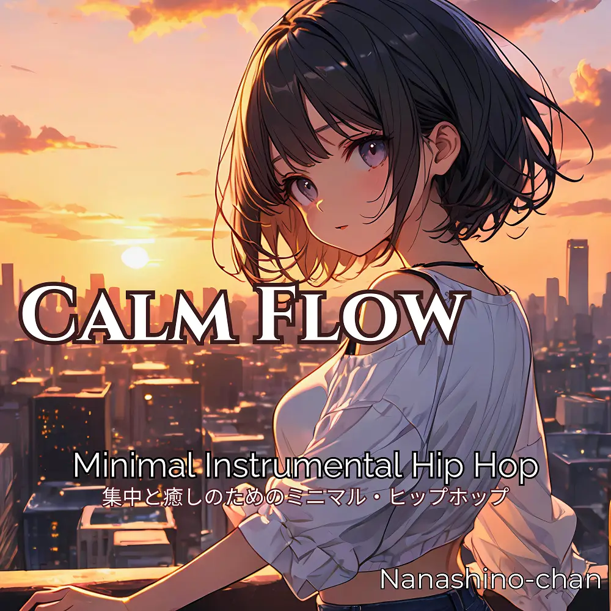

Hip Hop
Calm Flow: Minimal Instrumental Hip Hop
Nanashino-chan
Explore Calm Flow: Minimal Instrumental Hip Hop by Nanashino-chan: 20 instrumental tracks spanning Hip Hop. Start with Midnight Routine / Faded Corners, preview the collection and find your favorites on streaming services.
2025-10-17 · Released · 20 tracks · Instrumental
Preview the album
The jacket stays here until you choose a track. Playback uses YouTube.
YOUTUBE PREVIEW
Choose a track to listen
The jacket stays here until you choose a track. Playback uses YouTube.
If playback is unavailable, open the album or track on the streaming service.
Find this album on streaming services
Links marked “search” open search results. Select the album or track on the service.
Track list 20
- 01Midnight Routine
- 02Faded Corners
- 03Dusty Pages
- 04City Silence
- 05.Slow Pulse
- 06Jazz District
- 07Moonlight Loop
- 08Concrete Dreams
- 09Analog Rain
- 10Calm Syntax
- 11Echoed Memories
- 12Afterglow Tape
- 13Monochrome Sky
- 14Light Textures
- 15Steady Steps
- 16Thought Process
- 17Study Flow
- 1818.Low-End Drift
- 19Quiet Resolve
- 20End Scene
Find a sound for your next post
Copy “Nanashino-chan + track title” and paste it into your social app’s music search. Availability depends on your region and account. Copying the name does not grant usage rights.